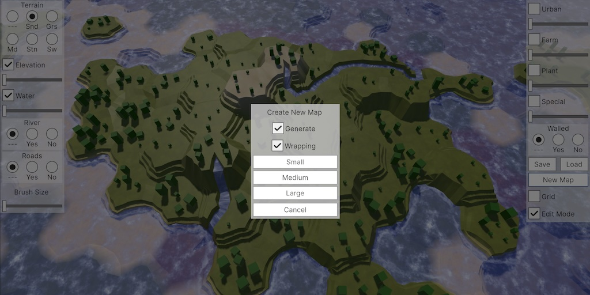
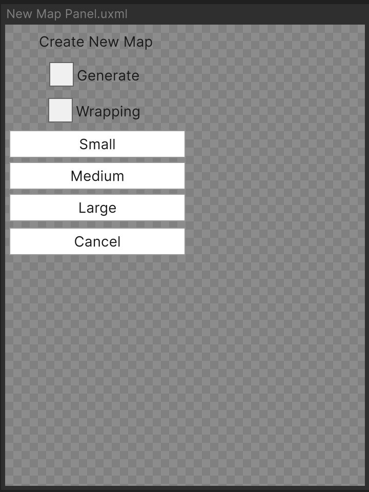
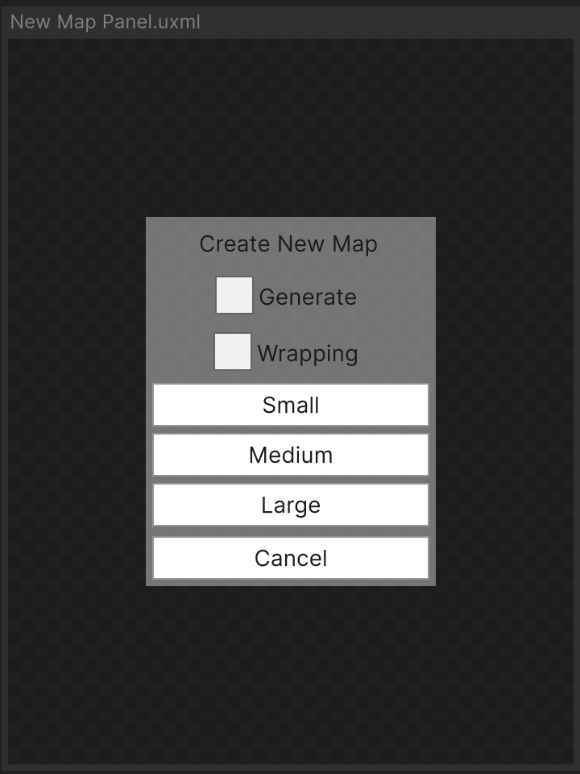
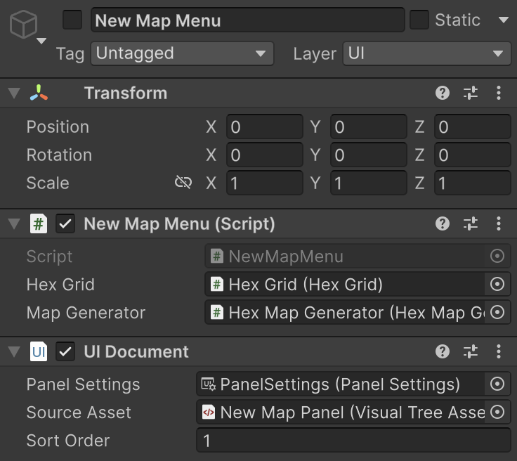

Hex Map 5.1.0
New Map Menu

This tutorial is made with Unity 6000.3.8f1 and follows Hex Map 5.0.0.
Shared Styles
We're going to upgrade the remaining old UI menus. this time we'll take care of the New Map menu. This menu can reuse styles that we already defined in Side Panels Styles.uss. Let's rename it to UI Styles.uss because it'll no longer be for the side panels only.
Renaming the asset causes Side Panels.uxml to no longer find the styles, so we have to fix the reference there. I choose to directly edit the XML text instead of using the UI Builder.
<Style src="UI Styles.uss"/>
While we're editing the XML, let's also rename the engine namespace to ui and editor to uie. I do this because Unity now uses those names by default, which are shorter. This makes no functional difference, it is purely for consistency and convenience.
<?xml version="1.0" encoding="utf-8"?> <ui:UXML xmlns:xsi="http://www.w3.org/2001/XMLSchema-instance" xmlns:ui="UnityEngine.UIElements" xmlns:uie="UnityEditor.UIElements" xsi:noNamespaceSchemaLocation="../../UIElementsSchema/UIElements.xsd"> <Style src="UI Styles.uss"/> <ui:VisualElement name="LeftPanel" class="sidePanel" style="left: 0;"> … </ui:VisualElement> </ui:UXML>
UI Document
We need a UI document asset for the upgraded New Map menu. Either create a new one or duplicate Side Panel.uxml and name it New Map Panel.uxml. Open its XML file and replace its contents with the side panel XML minus its visual elements. This gives us a preconfigured empty document to start with.
<?xml version="1.0" encoding="utf-8"?> <ui:UXML xmlns:xsi="http://www.w3.org/2001/XMLSchema-instance" xmlns:ui="UnityEngine.UIElements" xmlns:uie="UnityEditor.UIElements" xsi:noNamespaceSchemaLocation="../../UIElementsSchema/UIElements.xsd"> <Style src="UI Styles.uss"/> </ui:UXML>
The document that we are creating has two main parts. First, it has an overlay background that covers the entire game window. This will be our root visual element and we'll give it the overlayBackground style class. We'll define this class later. Then we add another visual element as a child of the background for the visible menu, which we give the overlayPanel style class. We also set its width style to 180px, matching the width of the old menu.
<Style src="UI Styles.uss"/> <ui:VisualElement class="overlayBackground"> <ui:VisualElement class="overlayPanel" style="width: 180px;"> </ui:VisualElement> </ui:VisualElement>
Now fill the panel with elements matching the old menu. So we have a label, two toggles, three buttons for the map sizes, and a cancel button. We want the label and both toggles to be center themselves, so set their align-self style to center. Also, set the margin style of the cancel button to 4px so there's a gap between it and the other buttons, which mimics the existing menu. Give appropriate names to all these elements.
<ui:VisualElement class="overlayPanel" style="width: 180px;"> <ui:Label text="Create New Map" style="align-self: center;"/> <ui:Toggle label="Generate" name="Generate" style="align-self: center;"/> <ui:Toggle label="Wrapping" name="Wrapping" style="align-self: center;"/> <ui:Button text="Small" name="Small"/> <ui:Button text="Medium" name="Medium"/> <ui:Button text="Large" name="Large"/> <ui:Button text="Cancel" name="Cancel" style="margin: 4px;"/> </ui:VisualElement>

Next, open UI Styles.uss and add the .overlayBackground style class. Set its background-color to black with alpha 0.78. Set both its width and height to 100% so it covers the entire window.
.overlayBackground {
background-color: rgba(0, 0, 0, 0.78);
width: 100%;
height: 100%;
}
To position the menu panel child in the center add styling for align-items and justify-content, both set to center.
width: 100%; height: 100%; align-items: center; justify-content: center;
Also add the .overlayPanel style class. We only give it a semitransparent background color, matching the other panels.
.overlayPanel {
background-color: rgba(255, 255, 255, 0.39);
}

Game Object
To put the document in the game go to the UI / New Map Menu game object. Remove all components for the old UI, so everything except the NewMapMenu component. Remove them from bottom to top to avoid complaints about required components. After that also remove the RectTransform component, which replaces it with a regular Transform component, then reset it. Finally, add a UIDocument component and hook up its Panel Settings and Source Asset properties. Set its Sort Order to 1 so it will be placed on top of the side panels.

Note that we set the game object to be deactivated by default. You can temporarily activate it to check how the menu would look in the game. This should also reveal that the child game objects for the old UI still exist. Remove them as they are no longer needed.
Component
To make the new menu functional we have to adjust the code of NewMapMenu. First, we now require that the UIDocument component exists on the same game object, so add the RequireComponent attribute to the class. This would automatically add the component if we added this component to a game object, but we already have everything in place.
using UnityEngine;
using UnityEngine.UIElements;
[RequireComponent(typeof(UIDocument))]
public class NewMapMenu : MonoBehaviour { … }
The in-game representation for UI documents only exists when their game object and component are active. Deactivating or disabling them will cause the in-game UI to be deleted. So every time we open the menu its UI will be created anew. This is fine for a rarely-used menu like this one. So we have to hook up the toggles and buttons to our code in the Open method, which gets invoked every time the New Map button of the right side panel is clicked.
We start by retrieving the root visual element from the UIDocument component. We could store a reference to the component in a field and hook it up via the inspector, but as we only use it here we'll invoke GetComponent instead. The overhead of relying on this method is insignificant compared to generating the UI.
public void Open()
{
gameObject.SetActive(true);
HexMapCamera.Locked = true;
VisualElement root = GetComponent<UIDocument>().rootVisualElement;
}
Invoke RegisterValueChangedCallback on the toggles to make them set the generateMap and wrapping fields.
VisualElement root = GetComponent<UIDocument>().rootVisualElement;
root.Q<Toggle>("Generate").RegisterValueChangedCallback(
change => generateMaps = change.newValue);
root.Q<Toggle>("Wrapping").RegisterValueChangedCallback(
change => wrapping = change.newValue);
Add clicked event handlers to the buttons that invoke CreateMap with the appropriate sizes, and make the cancel button invoke Close.
root.Q<Toggle>("Wrapping").RegisterValueChangedCallback(
change => wrapping = change.newValue);
root.Q<Button>("Small").clicked += () => CreateMap(20, 15);
root.Q<Button>("Medium").clicked += () => CreateMap(40, 30);
root.Q<Button>("Large").clicked += () => CreateMap(80, 60);
root.Q<Button>("Cancel").clicked += Close;
Now we can remove the old public methods that were used by the old UI.
// public void ToggleMapGeneration(bool toggle) => generateMaps = toggle;// public void ToggleWrapping(bool toggle) => wrapping = toggle;…// public void CreateSmallMap() => CreateMap(20, 15);// public void CreateMediumMap() => CreateMap(40, 30);// public void CreateLargeMap() => CreateMap(80, 60);
Our upgraded New Map menu is now functional. But trying it out in play mode reveals that the toggles reset every time the menu is opened and they don't match the default state of the fields. This happens because the UI is recreated every time. We fix both issues by setting the value property of the toggles in Open.
var generateToggle = root.Q<Toggle>("Generate");
generateToggle.value = generateMaps;
generateToggle.RegisterValueChangedCallback(
change => generateMaps = change.newValue);
var wrappingToggle = root.Q<Toggle>("Wrapping");
wrappingToggle.value = wrapping;
wrappingToggle.RegisterValueChangedCallback(
change => wrapping = change.newValue);
This takes care of the New Map menu. We'll upgrade the Save/Load menu in the next tutorial, which is Hex Map 5.2.0.